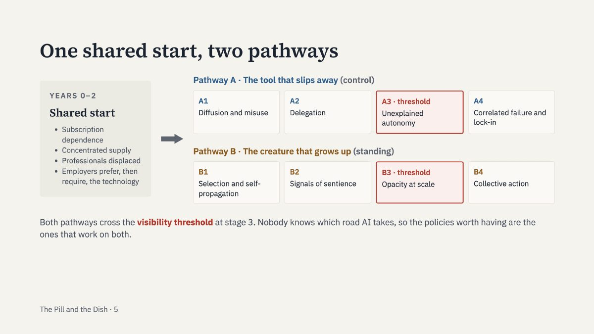

Explorations
Explorations

AI policy · 2026
The Pill and the Dish
Two imaginary technologies, an augmentation pill and a dish of lab-grown neurons, show which AI policies will still work a decade from now and which popular tools expire first.
Policy report · Essay · Summary slides
Explore the project →